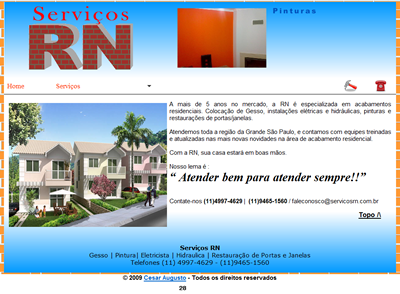
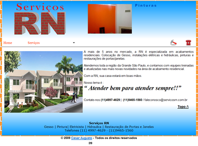

Nossos Servicos
Trabalhamos com montagem ou configuração de sua CPU, podendo escolher os componentes que serão colocados no seu PC, assim deixando a maquina na medida certa ao trabalho que ela ira realizar, trabalhamos com o concerto e substituição de peças, instalação e configuração de sistema operacional e recuperação de dados no HD.
Trabalhamos com montagem e configuração de rede de computadores, montando na sua empresa ou casa dês de uma rede wireless na sua casa, a uma rede corporativa com servidores e toda infra-estrutura para sua empresa tenha uma rede estável e rápida, atendendo as necessidades de sua empresa. Configuramos servidores com Windows ou Linux dependendo das suas necessidades
Trabalhamos com criação, manutenção, hospedou e registrou seu domínio de web sites, criamos sites usando as mais novas técnicas e ferramentas para desenvolver um site bonito e funcional, facilitando o acesso aos sites de buscas como o Google. Em nossos sites utilizamos vários recursos como Ajax, flash , PHP, ASP, animações em JS, e vários recursos do programas do Pacote Abobe CS4 (Dreamweaver CS4, Flash CS 4, Firewoks CS 4, Photoshop CS 4) e Corel Draw X4.
Abaixo alguns exemplos de nossos trabalhos já realizados, ** click nas imagens acessar os sites. 

 Trabalhamos com criação e envio de email marketing, pois hoje em dia o e-mail marketing tem se mostrado uma importante ferramenta para a publicidade das empresas e produtos, O email marketing é uma ferramenta importantíssima para o empreendedor na geração de tráfego e, principalmente, no relacionamento com os clientes. Criar e enviar uma email newsletter pode alavancar o sucesso de um negócio na Internet. Suas principais características:
Trabalhamos com criação e envio de email marketing, pois hoje em dia o e-mail marketing tem se mostrado uma importante ferramenta para a publicidade das empresas e produtos, O email marketing é uma ferramenta importantíssima para o empreendedor na geração de tráfego e, principalmente, no relacionamento com os clientes. Criar e enviar uma email newsletter pode alavancar o sucesso de um negócio na Internet. Suas principais características:
- Agilidade: O e-mail é uma ferramenta ágil tanto no envio quanto na resposta e avaliação do retorno. Um simples clique na tecle “send” do software dispara o envio de milhares de e-mails que em segundos estão na caixa postal do destinatário. A resposta ao email marketing normalmente é imediata através da ação desejada ou simplesmente da confirmação de recebimento.
- Mensurabilidade: É muito fácil medir o retorno do email marketing. As estatísticas de seu site vão lhe indicar: quantas pessoas receberam, quantas clicaram em um link, visitaram o site, compraram; quantas não desejam mais receber sua comunicação e solicitam a exclusão da lista, e diversas outras informações.
- Interatividade: Um simples link no e-mail possibilita ao destinatário realizar uma ação como retornar uma resposta, visitar um site ou solicitar a sua exclusão da lista.
- Alta Taxa de Resposta: Campanhas de email marketing sérias, com comunicação enviada para destinatários que autorizaram o recebimento (opt-in) tem altíssimos índices de retorno.